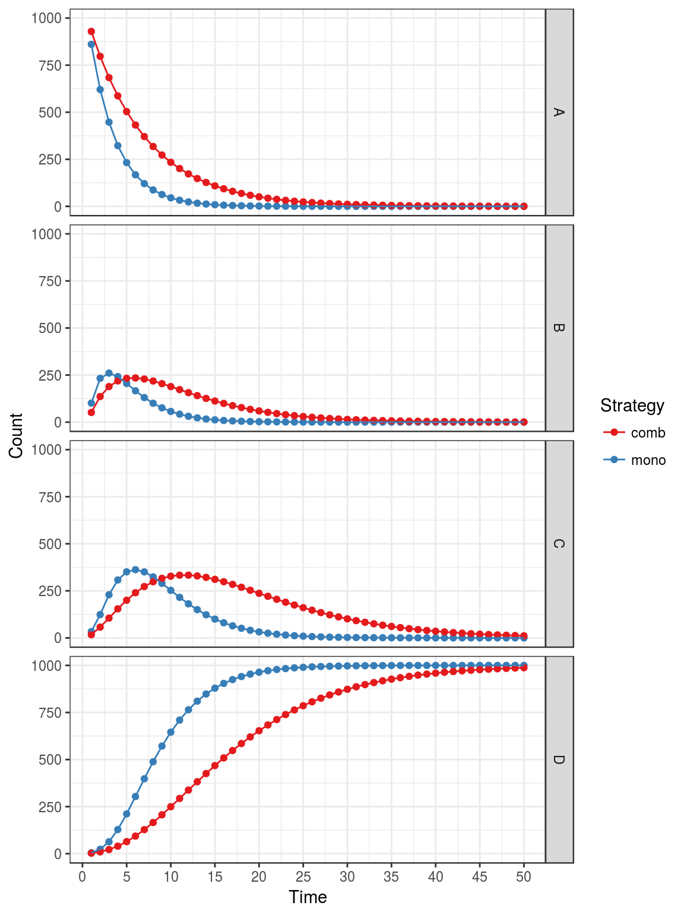

The most simple Markov models in health economic evaluation are models were transition probabilities between states do not change with time. Those are called homogeneous or time-homogeneous Markov models.
Model description
In this example we will model the cost effectiveness of lamivudine/zidovudine combination therapy in HIV infection (Chancellor, 1997) further described in Decision Modelling for Health Economic Evaluation, page 32. For the sake of simplicity we will not reproduce exactly the analysis from the book. See vignette vignette("i-reproduction", "heemod") for an exact reproduction of the analysis.
This model aims to compare costs and utilities of two treatment strategies, monotherapy and combined therapy.
Four states are described, from best to worst health-wise:
- A: CD4 cells > 200 and < 500 cells/mm3;
- B: CD4 < 200 cells/mm3, non-AIDS;
- C: AIDS;
- D: Death.
Transition probabilities
Transition probabilities for the monotherapy study group are rather simple to implement with define_transition():
mat_mono <- define_transition(
.721, .202, .067, .010,
0, .581, .407, .012,
0, 0, .750, .250,
0, 0, 0, 1
)## No named state -> generating names.
mat_mono## A transition matrix, 4 states.
##
## A B C D
## A 0.721 0.202 0.067 0.01
## B 0.581 0.407 0.012
## C 0.75 0.25
## D 1The combined therapy group has its transition probabilities multiplied by \(rr = 0.509\), the relative risk of event for the population treated by combined therapy. Since \(rr < 1\), the combined therapy group has less chance to transition to worst health states.
The probabilities to stay in the same state are equal to \(1 - \sum P_{trans}\) where \(P_{trans}\) are the probabilities to change to another state (because all transition probabilities from a given state must sum to 1).
We use the alias C as a convenient way to specify the probability complement, equal to \(1 - \sum P_{trans}\).
rr <- .509
mat_comb <- define_transition(
C, .202*rr, .067*rr, .010*rr,
0, C, .407*rr, .012*rr,
0, 0, C, .250*rr,
0, 0, 0, 1
)## No named state -> generating names.
mat_comb## A transition matrix, 4 states.
##
## A B C D
## A C 0.202 * rr 0.067 * rr 0.01 * rr
## B C 0.407 * rr 0.012 * rr
## C C 0.25 * rr
## D 1We can plot the transition matrix for the monotherapy group:
plot(mat_mono)## Le chargement a nécessité le package : diagram
And the combined therapy group:
plot(mat_comb)
State values
The costs of lamivudine and zidovudine are defined:
cost_zido <- 2278
cost_lami <- 2086In addition to drugs costs (called cost_drugs in the model), each state is associated to healthcare costs (called cost_health). Cost are discounted at a 6% rate with the discount function.
Efficacy in this study is measured in terms of life expectancy (called life_year in the model). Each state thus has a value of 1 life year per year, except death who has a value of 0. Life-years are not discounted in this example.
Only cost_drug differs between the monotherapy and the combined therapy treatment groups, the function dispatch_strategy() can be used to account for that. For example state A can be defined with define_state():
state_A <- define_state(
cost_health = discount(2756, .06),
cost_drugs = discount(dispatch_strategy(
mono = cost_zido,
comb = cost_zido + cost_lami
), .06),
cost_total = cost_health + cost_drugs,
life_year = 1
)
state_A## A state with 4 values.
##
## cost_health = discount(2756, 0.06)
## cost_drugs = discount(dispatch_strategy(mono = cost_zido, comb = cost_zido +
## cost_lami), 0.06)
## cost_total = cost_health + cost_drugs
## life_year = 1The other states for the monotherapy treatment group can be specified in the same way:
state_B <- define_state(
cost_health = discount(3052, .06),
cost_drugs = discount(dispatch_strategy(
mono = cost_zido,
comb = cost_zido + cost_lami
), .06),
cost_total = cost_health + cost_drugs,
life_year = 1
)
state_C <- define_state(
cost_health = discount(9007, .06),
cost_drugs = discount(dispatch_strategy(
mono = cost_zido,
comb = cost_zido + cost_lami
), .06),
cost_total = cost_health + cost_drugs,
life_year = 1
)
state_D <- define_state(
cost_health = 0,
cost_drugs = 0,
cost_total = 0,
life_year = 0
)Strategy definitions
Strategies can now be defined by combining a transition matrix and a state list with define_strategy():
strat_mono <- define_strategy(
transition = mat_mono,
state_A,
state_B,
state_C,
state_D
)## No named state -> generating names.
strat_mono## A Markov model strategy:
##
## 4 states,
## 4 state valuesFor the combined therapy model:
strat_comb <- define_strategy(
transition = mat_comb,
state_A,
state_B,
state_C,
state_D
)## No named state -> generating names.Running the model
Both strategies can then be combined in a model and run for 50 years with run_model(). Strategies are given names (mono and comb) in order to facilitate result interpretation.
res_mod <- run_model(
mono = strat_mono,
comb = strat_comb,
cycles = 50,
cost = cost_total,
effect = life_year
)By default models are run for 1000 persons starting in the first state (here state A).
Result interpretation
Strategy values can then be compared with summary() (optionally net monetary benefits can be calculated with the threshold option):
## 2 strategies run for 50 cycles.
##
## Initial state counts:
##
## A = 1000L
## B = 0L
## C = 0L
## D = 0L
##
## Counting method: 'life-table'.
##
##
##
## Counting method: 'beginning'.
##
##
##
## Counting method: 'end'.
##
## Values:
##
## cost_health cost_drugs cost_total life_year
## mono 33891136 14870957 48762093 8585.843
## comb 48739757 44245091 92984848 17256.937
##
## Net monetary benefit difference:
##
## 1000 5000 6000 10000
## mono 35551.66 867.2847 0.000 0.00
## comb 0.00 0.0000 7803.809 42488.19
##
## Efficiency frontier:
##
## mono -> comb
##
## Differences:
##
## Cost Diff. Effect Diff. ICER Ref.
## comb 44222.75 8.671094 5100.02 monoThe incremental cost-effectiveness ratio of the combined therapy strategy is thus £5100 per life-year gained.
The counts per state can be plotted by model:
plot(res_mod, type = "counts", panel = "by_strategy") +
xlab("Time") +
theme_bw() +
scale_color_brewer(
name = "State",
palette = "Set1"
)
Or by state:
plot(res_mod, type = "counts", panel = "by_state") +
xlab("Time") +
theme_bw() +
scale_color_brewer(
name = "Strategy",
palette = "Set1"
)
The values can also be represented:
plot(res_mod, type = "values", panel = "by_value",
free_y = TRUE) +
xlab("Time") +
theme_bw() +
scale_color_brewer(
name = "Strategy",
palette = "Set1"
)
Note that classic ggplot2 syntax can be used to modifiy plot appearance.